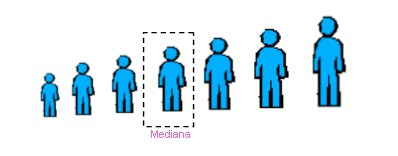
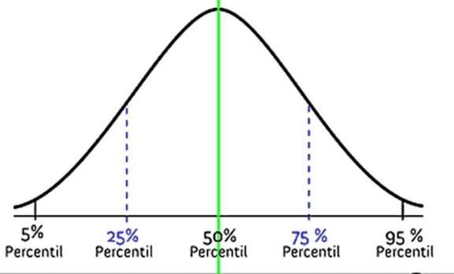
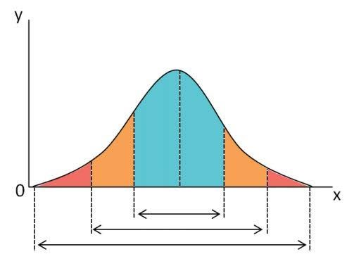
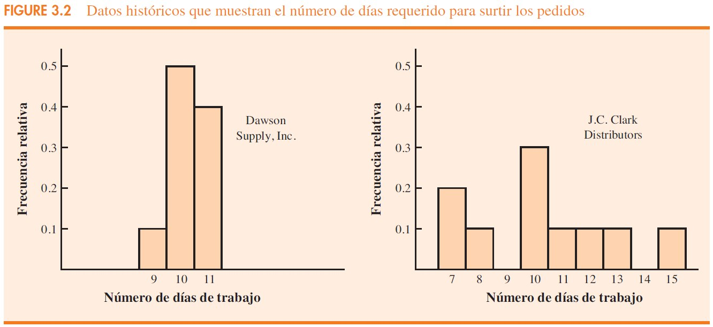
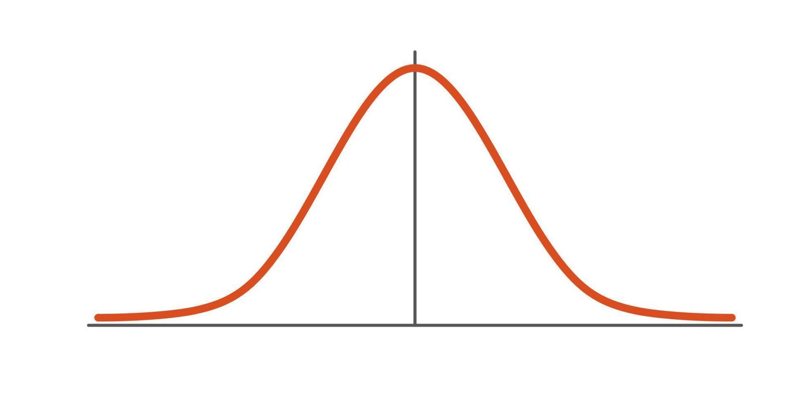
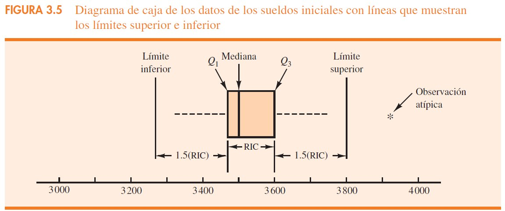

FACULTADAD INTERDISCLIPLINARIA DE CIENCIAS ECONÓMICAS Y ADMINISTRATIVAS
DOCTORADO EN CIENCIAS ECONÓMICAS Y ADMINISTRATIVAS
Capítulo 3
Navega con → ← · Bloques con M · Tema con T · Pantalla completa con F
Ruta de la sesión
| Bloque | Contenido | Diapositivas |
|---|---|---|
| 1 | Introducción y fundamentos | 2–3 |
| 2 | 3.1 Medidas de posición o localización · StartSalary | 4–13 |
| 3 | 3.2 Medidas de variabilidad · BackToSchool | 14–23 |
| 4 | 3.3 Forma, posición relativa y observaciones atípicas · NCAA | 24–32 |
| 5 | 3.4 Análisis exploratorio de datos | 33–36 |
| 6 | 3.5 Medidas de asociación entre dos variables | 37–39 |
| 7 | 3.6 Media ponderada y datos agrupados | 40–43 |
| 8 | Síntesis y cierre · Visa de tarea | 44–45 |
Los ejercicios usan StartSalary, BackToSchool y NCAA; la actividad final usa Visa. Todas se descargan en la lámina «Materiales».
Cada lámina indica en su encabezado el número de diapositiva de la presentación original.
Introducción · diap. 2
Describir, interpretar y comparar conjuntos de datos mediante medidas numéricas que permitan apoyar el análisis y la toma de decisiones.
Medidas de posición / localización
Medidas de variabilidad
Medidas de la forma de distribución
Análisis exploratorio de datos
Medidas de asociación entre dos variables
Media ponderada y datos agrupados
El capítulo pasa de describir una variable a estudiar la relación entre dos variables y, finalmente, a trabajar con pesos y distribuciones agrupadas.
Fundamentos · diap. 3
Conjunto de observaciones seleccionado para analizar una población.
Conjunto total de unidades u observaciones de interés.
En una muestra, las medidas son estadísticos; en una población, son parámetros.
x̄ = Σxi / n
μ = Σxi / N
3.1 · diap. 4
Ubican el centro o la posición relativa de los datos: media, mediana, moda, percentiles y cuartiles.
3.1 · diap. 5
La media, o valor medio, es quizá la medida de ubicación más importante para una variable, pues proporciona una medida de la ubicación central de los datos.
3.1 · diap. 6
x̄ = Σxi / n
μ = Σxi / N
Usa todas las observaciones.
Tamaños de grupo: 46, 54, 42, 46, 32
Σxi = 220; n = 5
x̄ = 220 / 5 = 44 estudiantes
Interpretación: el tamaño promedio de grupo es 44 estudiantes.
Valores extremos pueden desplazar la media.
3.1 · diap. 7
La mediana es otra medida de ubicación central; es el valor de en medio cuando los datos están acomodados en orden ascendente (del valor menor al valor mayor). Con un número impar de observaciones, la mediana es el valor de en medio. Con un número par, no hay valor de en medio. En este caso se sigue la convención y la mediana se define como el promedio de los valores de las dos observaciones de en medio.

3.1 · diap. 8
… 3 490 | 3 520 …
Mediana = (3 490 + 3 520) / 2 = $3 505
Es menos sensible a valores extremos. En los sueldos del ejemplo, sustituir $3 925 por $10 000 cambia mucho la media, pero no la mediana.
Ingresos, precios de vivienda y otros datos donde pueden aparecer valores muy grandes o pequeños.
3.1 · diap. 9
La moda es el valor que ocurre con mayor frecuencia.
Moda = 46
Exactamente dos modas.
Más de dos modas.
Cuando listar muchas modas no aporta una descripción clara.
3.1 · diap. 10
Un percentil proporciona información sobre cómo se distribuyen los datos en el intervalo del valor menor al valor mayor.
Los colegios y universidades suelen reportar los resultados de los exámenes de admisión en términos de percentiles. Por ejemplo, suponga que un solicitante obtiene una puntuación bruta de 54 en la parte verbal de un examen de admisión. Esta información no dice mucho acerca del desempeño que este estudiante tuvo en relación con otros que presentaron el mismo examen. Sin embargo, si la puntuación bruta de 54 corresponde al percentil 70, se sabe que aproximadamente 70% de los estudiantes obtuvo una puntuación menor a la de esta persona y alrededor de 30% alcanzó una puntuación mayor a la de esta persona.

3.1 · diap. 11
Un percentil p divide los datos de modo que aproximadamente p% de las observaciones queda por debajo y (100−p)% por encima.
i = (p / 100)n
P85: i = (85/100)(12) = 10.2 → posición 11 → $3 730
Ejemplo de interpretación: percentil 70 ≈ 70% obtuvo una puntuación menor y ≈30% una mayor.
3.1 · diap. 12
A menudo es recomendable dividir los datos en cuatro partes, cada una de las cuales contiene aproximadamente un cuarto, o 25% de las observaciones.
Q1 = percentil 25 • Q2 = percentil 50 (mediana) • Q3 = percentil 75
Ejemplo: Q1 = $3 465 | Q2 = $3 505 | Q3 = $3 600
Nota: pueden existir pequeñas diferencias según la convención usada para calcular cuartiles.
3.1 · diap. 13
TABLA 3.1 Sueldos mensuales iniciales para una muestra de 12 licenciados en administración de empresas recién egresados
| Graduate | Monthly Starting Salary ($) | Graduate | Monthly Starting Salary ($) |
|---|---|---|---|
| 1 | 3450 | 7 | 3490 |
| 2 | 3550 | 8 | 3730 |
| 3 | 3650 | 9 | 3540 |
| 4 | 3480 | 10 | 3925 |
| 5 | 3355 | 11 | 3520 |
| 6 | 3310 | 12 | 3480 |
Obtener Media, Mediana, Moda, Percentíles y Cuartíles.
3.2 · diap. 14
Miden cuánto se dispersan los datos: rango, rango intercuartílico, varianza, desviación estándar y coeficiente de variación.
3.1 · diap. 15
Además de las medidas de posición, con frecuencia es conveniente considerar las medidas de variabilidad o dispersión.

3.2 · diap. 16
La medida de variabilidad más sencilla es el rango.
Dos proveedores pueden tener la misma media y, sin embargo, distinta confiabilidad.
9 10 10 10 11 11 10 11 10 10
Media ≈ 10 días
7 7 8 10 10 10 11 12 13 15
Media ≈ 10 días
La menor dispersión de Dawson la hace más consistente para la planeación.
La variabilidad genera incertidumbre en la planeación de producción y en la selección de proveedores.

3.2 · diap. 17
Rango = valor mayor − valor menor
RIC = Q3 − Q1
El rango usa solo dos observaciones (datos); el RIC se concentra en el 50% central.
3.2 · diap. 18
σ² = Σ(xi − μ)² / N
s² = Σ(xi − x̄)² / (n − 1)
Tamaños de grupo: Σ(xi−x̄)² = 256
n−1 = 4
s² = 256/4 = 64
Mayor varianza → mayor variabilidad.
3.2 · diap. 19
s = √s² | σ = √σ²
CV = (desviación estándar / media) × 100%
Está en las mismas unidades que los datos. Para los sueldos: s = $165.65, lo que facilita su comparación con la media ($3,540).
Es una medida relativa. Tamaños de grupo: 18.2%. Sueldos: 4.7%. Es útil cuando las medias y desviaciones estándar están en escalas distintas.
Regla práctica del capítulo: menor CV → menor variabilidad relativa.
3.2 · diap. 20
Rango = 2 días
Menor dispersión → mayor consistencia
Rango = 8 días
Mayor dispersión → más incertidumbre
El capítulo enfatiza que una media idéntica no implica igual confiabilidad.
3.2 · diap. 21
La Federación Nacional de Minoristas informó que los estudiantes universitarios de primer año gastan más en artículos de regreso a clases que cualquier otro grupo universitario (USA Today, 4 de agosto de 2006). El archivo BackToSchool contiene una base de datos muestrales que compara los gastos de regreso a clases de 25 estudiantes de primer año y 20 del último año.
3.2 · diap. 22
3.2 · diap. 23
3.3 · diap. 24
El sesgo describe la forma; el valor z ubica una observación; Chebyshev y la regla empírica permiten estimar proporciones; las puntuaciones z ayudan a detectar atípicos.
3.3 · diap. 25
Simétrica: media ≈ mediana • Sesgo positivo: media > mediana • Sesgo negativo: media < mediana.
3.3 · diap. 26
El valor z para cualquier observación puede interpretarse como una medida de la posición relativa de la observación en un conjunto de datos. Por tanto, se dice que las observaciones de dos conjuntos de datos diferentes con el mismo valor z tienen la misma posición relativa en términos de que presentan igual número de desviaciones estándar de la media.
zi = (xi − x̄) / s
x̄ = 44, s = 8
Para x = 32: z = (32−44)/8 = −1.50
3.3 · diap. 27
El teorema de Chebyshev permite hacer afirmaciones acerca de la proporción de los valores de datos que deben estar dentro de un número específico de desviaciones estándar de la media.
Al menos 1 − 1/z² de los datos está dentro de z desviaciones estándar de la media (z > 1).
≥ 75%
≥ 89%
≥ 94%
Ejemplo: media 70, s = 5. Entre 60 y 80 hay ±2s → al menos 75% de los estudiantes.
Ventaja: se aplica a cualquier conjunto de datos, independientemente de su forma de distribución.
3.3 · diap. 28
Una de las ventajas del teorema de Chebyshev estriba en que se aplica a cualquier conjunto de datos sin importar su forma de distribución. De hecho, podría usarse con cualquiera de las distribuciones de la figura 3.3. Sin embargo, en muchas aplicaciones prácticas los conjuntos de datos exhiben una distribución simétrica con forma de pila o de campana.

≈ 68% de los datos
≈ 95% de los datos
Casi todos los datos
3.3 · diap. 29
Un conjunto de datos a veces tiene una o más observaciones con valores inusualmente grandes o sumamente pequeños. Estos valores extremos se llaman observaciones atípicas.
No eliminar automáticamente: primero verificar exactitud y pertinencia.
En los tamaños de grupo, z = −1.50 no alcanza el umbral de ±3; no se identifica un atípico por este método.
Buscar atípicos antes de tomar decisiones mejora la calidad del análisis.
3.3 · diap. 30
Una muestra de puntuaciones de 10 partidos de basquetbol colegial de la NCAA proporcionó los datos siguientes (USA Today, 26 de enero de 2004).
3.3 · diap. 31
3.3 · diap. 32
3.4 · diap. 33
Resume y visualiza la distribución mediante el resumen de cinco números y el diagrama de caja.
3.4 · diap. 34
La manera más fácil de elaborar un resumen de cinco números es colocar primero los datos en orden ascendente. Una vez hecho esto es fácil identificar el valor menor, los tres cuartiles y el valor mayor.
Valor menor
Q1
Mediana (Q2)
Q3
Valor mayor
$3 310 | $3 465 | $3 505 | $3 600 | $3 925
Entre números adyacentes hay aproximadamente 25% de las observaciones.
3.4 · diap. 35
Un diagrama de caja es un resumen gráfico de los datos basado en un resumen de cinco números. La clave para elaborar de un diagrama de caja es el cálculo de la mediana y los cuartiles Q1 y Q3.
Límites = Q1 − 1.5(RIC) y Q3 + 1.5(RIC)
3.4 · diap. 36

3.5 · diap. 37
La covarianza y el coeficiente de correlación describen la asociación lineal entre dos variables.
3.5 · diap. 38
La covarianza se define como una medida de la relación entre las variaciones de dos variables, indicando si tienden a aumentar o disminuir juntas.
sxy = Σ(xi−x̄)(yi−ȳ) / (n−1)
σxy = Σ(xi−μx)(yi−μy) / N
x̄ = 3 comerciales; ȳ = 51 (cientos de dólares)
Σ(xi−x̄)(yi−ȳ) = 99
sxy = 99/9 = 11
La covarianza es sensible a las unidades de medida.
3.5 · diap. 39
Asociación positiva
Cuando x aumenta, y tiende a aumentar.
Sin asociación lineal
No se observa una asociación lineal clara.
Asociación negativa
Cuando x aumenta, y tiende a disminuir.
Limitación: un valor grande o pequeño de covarianza depende de las unidades de x-y.
Por ello se utiliza una medida estandarizada: el coeficiente de correlación.
3.6 · diap. 40
Cuando las observaciones tienen distinta importancia o sólo se dispone de una distribución de frecuencia, la media simple puede no ser adecuada.
3.6 · diap. 41
x̄w = Σ(wi xi) / Σwi
Costos: $3.00, $3.40, $2.80, $2.90, $3.25
Pesos (libras): 1 200, 500, 2 750, 1 000, 800
Media ponderada = $2.96/lb
La media simple sería $3.07 y sobreestimaría el costo medio real por libra adquirida.
3.6 · diap. 42
x̄ = Σ fi Mi / n
Mi = punto medio de la clase
fi = frecuencia de la clase
n = tamaño muestral
| Clase | Mi | fi | fiMi |
|---|---|---|---|
| 10–14 | 12 | 4 | 48 |
| 15–19 | 17 | 8 | 136 |
| 20–24 | 22 | 5 | 110 |
| 25–29 | 27 | 2 | 54 |
| 30–34 | 32 | 1 | 32 |
Σfi = 20; ΣfiMi = 380 → x̄ = 380/20 = 19 días
3.6 · diap. 43
s² = Σ fi(Mi − x̄)² / (n − 1)
s = √s²
Las medidas calculadas con datos agrupados son aproximaciones. Cuando sea posible, se recomienda usar los datos originales.
Síntesis · diap. 44
Calcular media, mediana, moda, percentiles y cuartiles para conocer el centro y la posición.
Medir rango, RIC, varianza, desviación estándar y CV; revisar sesgo y atípicos.
Usar covarianza/correlación para asociación lineal y medias ponderadas cuando los pesos importan.
Principio del capítulo: una medida aislada rara vez es suficiente; la interpretación surge de combinar centro, dispersión, forma y relación.
Cierre · diap. 45
De la base de datos Visa.sav realizaran los siguientes ejercicios:
Las actividades se inspiran en los ejercicios de métodos y aplicaciones incluidos al final de cada sección del capítulo.
Materiales de la sesión
Abren directo en SPSS. Se descargan con el nombre que usa la presentación (por ejemplo, 2.1. BackToSchool.sav).
StartSalary (diap. 13), BackToSchool (21–23), NCAA (30–32), Stereo (ejemplo de la diap. 38), Visa (actividad de la diap. 45) y Employee data (base de ejemplo de SPSS usada en la sesión).
Alfadhel, M. (2025). Unpacking when and how business analytics affect firm performance and customer satisfaction: A longitudinal examination. Journal of Retailing and Consumer Services, 84, 104219. doi:10.1016/j.jretconser.2024.104219
Anderson, Sweeney y Williams, Estadística para negocios y economía, capítulo 3: Estadística descriptiva: medidas numéricas.
Universidad de Sonora · Doctorado en Ciencias Económicas y Administrativas
Pulsa cualquier bloque para volver a él. También funcionan las teclas 1 a 8.
Pavel Raúl Dennis Quiñónez · Dr. Sergio Ramón Rossetti López · Septiembre 2026
Pulsa el número del bloque para saltar directo · M o Esc para volver